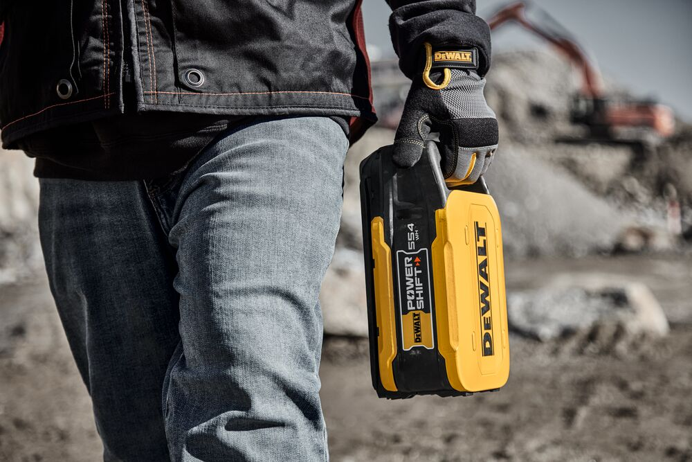

My work at Stanley Black and Decker is confidential and protected under the copyright of the company. I will try to explain my projects with the best possible images I find for free on the internet which are in no way connected to the projects but represent similar aspects.
DeWALT Powershift



Core engineer for DeWALT Powershift 10ah battery and mechanical improvements on concrete tools such as Rammer, plate compactor, and vibrator.
Axial Fan Jobsite Blower

Currently, I am designing a job site blower that replaces the one in the image above. My design uses 75% less power, has 2x output, and will save at least $200,000 in manufacturing costs over a year. This product is projected to sell over 150,000 units. Designing a tool from the ground up was exciting but at the same time a very challenging task.
I started this project from the brainstorming stage, following which I performed CFD simulations for the axial fan including parametric and non-parametric studies. Post analysis of data from over 100 simulations I narrowed down my parameter range which fits in with my design capabilities.
I performed tolerance stack-ups, design calculations for bending, and stress. Designed housings for the tool, fan-motor sub-assembly, and electronics modules.
Track Saw Track


The current track saw track made from aluminum extrusion is one of the best sellers in the market but gets damaged by mishandling by the users or the shippers. I redesigned the track which solves this problem and saves over 30% of the shipping and warranty costs for the company. For my new designs, I rethought the traditional practice of designing the tracks while keeping the precision of the product the same. Making many calculations for stack-ups, stress, straightness, and reliability of the new designs was one of the exciting parts of the project.
Audio Systems

For one of our speaker systems, I contributed to designing the woofer spider which is represented in a similar image above. I performed FEA - finite element analysis on the component to analyze if the deformation is within the acceptable range from our design.
I also utilized a CFD simulation study for the ports of the speaker system, analyzing the pressure and output velocity of the air from inside the speaker.
LED Light - Light Pipe Design and Ray Tracing

Most of the tools from Stanley Black and Decker have LEDs on them. I contributed to the mechanical design of a light pipe for one of our audio systems. I performed ray tracing analysis on the LED module to analyze the light output in lux and made multiple design iterations to get the correct amount of light through the lens. This was performed on software called TRACE-PRO, the image above is from the software's website which is very similar to the LED module I worked on.
Other Projects

Along with the many exciting projects above, I also worked on other DEWALT tools. I designed a new housing for our grinder. Tested tools which include our drills, impacts, grinders, track saws, circular saws, miter saw, and recip saws.